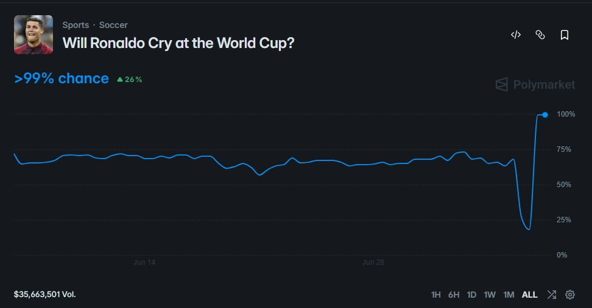

The $35M Market That Couldn't Decide If Ronaldo Cried

Somewhere between "will there be a recession" and "who wins the election," Polymarket found room for a market that asked something much simpler: will Cristiano Ronaldo cry at the World Cup. It sounds like a joke market. It wasn't. It pulled in $35,663,501 in volume — more than plenty of actual political and financial markets on the platform — and by the time the moment traders were waiting for actually happened, it turned into one of the messiest resolutions of the tournament.
A market built entirely on reading a face
The rules were exactly as literal as the title suggests: the market would resolve "Yes" if Ronaldo visibly shed tears on his face, on camera, while on the field or bench, during a Portugal match at the 2026 World Cup. Before, during, or after the match all counted. Locker room tears didn't. Old footage, edits, or anything not clearly authentic didn't either.
That's it. No stats, no injuries, no referee decisions to model — just whether a 41-year-old man playing what could be his final World Cup would well up on live television. And because Ronaldo has a well-known history of visible emotion in high-stakes moments, traders had genuine reasons to lean toward "Yes" going in.
How the odds actually moved
For most of the market's life, "Yes" traded in a fairly steady band, drifting up and down in the 60–80% range as traders weighed his emotional track record against the simple uncertainty of predicting a facial expression weeks in advance. Nothing dramatic — just a crowd slowly pricing in "probably, knowing him."
Then, right around the moment everyone had been waiting for, the price didn't drift — it fell off a cliff, crashing down to around 18%. Moments later it reversed hard and spiked to over 99%. That kind of whiplash on a market this size doesn't happen because sentiment changed — it happens when the underlying evidence itself becomes a genuine argument.
The actual dispute: tears or sweat
Here's the part that makes this more than just a funny market: it still isn't cleanly settled. Traders who bet "Yes" pointed to footage they say shows Ronaldo visibly crying. Traders who bet "No" looked at the same footage and argued it was sweat, not tears — a genuinely hard thing to distinguish from a broadcast camera angle on a hot pitch after 90+ minutes of running.
That ambiguity turned the comment section into its own small trial. One trader summed up the whole situation better than any resolution proposal could:
"It's not clear if it is sweat or tear, just settle it at 50-50 so everyone is happy"
Almost certainly a joke — but not a bad description of the actual epistemic problem. A 50/50 split resolution isn't how these markets work, but the fact that a joke like that got traction shows how genuinely unresolved the evidence was.
Why this is a better lesson than it looks
It's easy to laugh this off as a novelty market and move on. But it's a clean example of something that applies far beyond celebrity tears: markets are only as good as the clarity of their resolution criteria. "Visible tears clearly observed on his face" sounds airtight when you write it into the rules months before the event. It stops sounding airtight the moment real footage, real camera angles, and real human faces are involved.
The sharp price swings weren't traders panicking — they were traders reacting in real time to evidence that genuinely could be read two different ways. That's a very different situation from a market crashing because of a rumor or a manipulated order book. Here, the uncertainty was baked into the subject matter itself.
The takeaway
$35.6M was wagered on a single human being's tear ducts, and it still came down to a debate about sweat. If you ever wanted proof that prediction markets have moved well past politics and sports into pure, unfiltered human behavior, this is it. And if you're trading on markets like this, the real skill isn't reading Ronaldo's emotional history — it's reading how airtight the resolution criteria actually are before you put money on something that ultimately depends on someone else's judgment call.